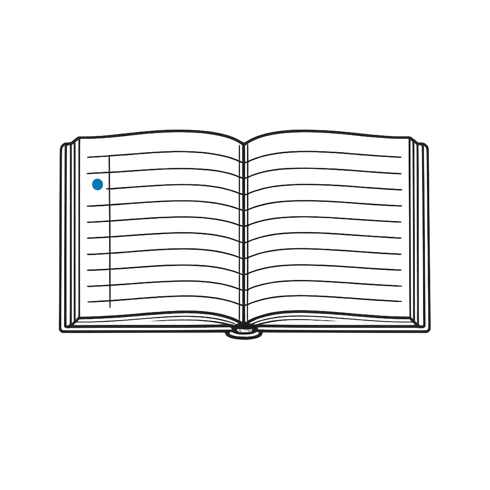

A manuscript editor that remembers everything.

Export a clean manuscript, a copyright registration packet, and a continuity report across every volume in the series.
Draft in the built-in editor — autosaved continuously as you go.
Characters, places, and concepts land in a searchable glossary.
Snapshot any draft and compare continuity across the whole series.
Drafts save continuously. Version snapshots on demand.
Log characters, places, and concepts with glossary definitions.
Track continuity across books in a multi-volume series.